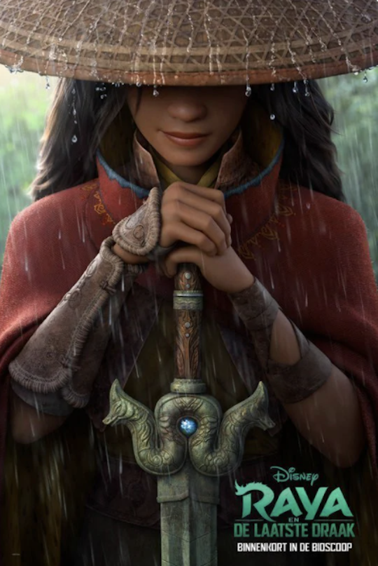
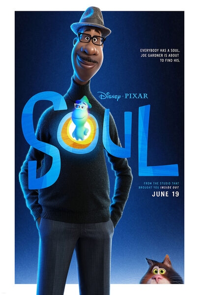

Binnenkort te zien
Black Widow
Actie, Avontuur, Sciencefiction
In de actievolle spionagethriller Black Widow van Marvel Studios wordt Natasha Romanoff, ook bekend als Black Widow, geconfronteerd met de duistere delen van haar leven, wanneer een gevaarlijke samenzwering ontstaat die verband houdt met haar verleden. Achtervolgd door een kracht die zich niet laat tegenhouden om haar uit te schakelen, moet Natasha omgaan met haar geschiedenis als spion en de verbroken relaties die in haar kielzog zijn achtergelaten, lang voordat ze een Avenger werd.
Geregisseerd door
Cate Shortland
Geschreven door
Eric Pearson
Geproduceerd door
Kevin Feige
Video's
-
Black Widow-trailer 1
-
Black Widow-trailer 2
Meer films
-

Raya en de laatste draak
-
Mulan
-

Soul